约 9642 个字 61 行代码 38 张图片 预计阅读时间 49 分钟
Chap 6 | 传输层
章节启示录
本章节是计算机网络的第六章。有些内容可能不重要，后续应该会标注。
1.概述和传输层服务¶
传输层的位置¶
-
传输层位于应用层和网络层之间：基于网络层提供的服务，向分布式应用程序提供通信服务
-
按照因特网的“端到端”设计原则：应用进程之间的通信。应用程序只运行在终端上，即不需要为网络设备编写程序
-
传输层应提供进程之间本地通信的抽象：即运行在不同终端上的应用进程仿佛是直接连在一起的
传输层提供什么服务？¶
- 因特网的网络层提供“尽力而为”的服务：
- 传输层的有所为、有所不为:
- 传输层可以通过差错恢复、重排序等手段提供可靠、按序的交付服务
- 但传输层无法提供延迟保证、带宽保证等服务
2.套接字编程¶
- 如何创建一个网络应用：编写一个分布式程序，使其运行在不同的端系统上，并通过网络通信
- 选择一种应用程序体系结构：
- 传统及主流的是客户-服务器体系结构（C/S）
- 有一台总是在线的主机，运行一个服务器程序(server)，服务器主机具有永久的、众所周知的地址
- 用户终端上运行一个客户程序（client），需要时主动与服务器程序通信，请求服务
- 客户只与服务器通信，客户之间不通信
- 传统及主流的是客户-服务器体系结构（C/S）
进程如何标识自己?
- 每个进程需要一个标识，以便其它进程能够找到它
- 问题：可以用进程所在主机的地址来标识进程吗？
- 回答：不能！因为同一个主机上可能运行着许多进程
- 端口号（port number）：端口号被用来区分同一个主机上的不同进程
- 因此，进程标识包括：
- 主机地址
- 主机上与该进程关联的端口号
在网络中通过IP地址来标识和区别不同的主机，通过端口号来标识和区分一台主机中的不同应用进程，端口号拼接到IP地址即构成套接字（Socket）。在网络中采用发送方和接收方的套接字来识别端点。
以下使用的应用例子：回音服务
- 客户程序从键盘读入一行字符（数据），发送给服务器
- 服务器接收数据，然后将收到的数据回送给客户
- 客户接收回送的数据，在屏幕上显示出来
- 套接字地址：通用地址:
- 套接字API接口的地址类型，作为不同类型套接字地址的“虚父类”
- 在套接字API的定义中使用
- 调用时为防止编译错误需要做强制类型转换
-
套接字地址：IPv4地址:
- sin_family：AF_INET(IPv4)，编程时实际使用地址类型
- sin_port：存放端口号(按照网络字节序存储)
- sin_addr：存放32位IP地址(无符号整数)
- sin_zero：为与sockaddr大小兼容而保留的空字节
-
创建套接字：socket():
- 客户或服务器调用socket()创建本地套接字，返回套接字描述符
- domain指明网络层地址类型
- type指明传输层协议：
- SOCK_STREAM代表TCP字节流
- SOCK_DGRAM代表UDP数据报
- 绑定套接字地址：bind():
- 用来将服务器本地套接字地址sa与描述符socket_fd绑定
- 客户程序不需要调用bind()，操作系统将为其在1024～5000之间分配一个端口号
-
关闭套接字：close()：
- 客户和服务器调用close()关闭一个套接字
- 当实参fd为TCP套接字描述符时：调用close()会引起本地进程向远程进程发送关闭连接的消息
- 当实参fd为UDP套接字描述符时：调用close()会引起为此描述符分配的资源被内核释放
-
基于UDP的套接字通信流程：
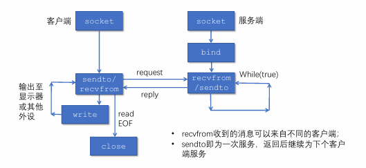 -
使用TCP套接字实现回音服务：使用TCP套接字编程时，可将TCP连接想像成一对套接字之间的一条封闭管道：
- 发送端TCP将要发送的字节序列从管道的一端（套接字）送入
- 接收端TCP从管道的另一端（套接字）取出字节序列
- 在管道中传输的字节不丢失，并保持顺序
-
TCP服务器监听套接字：listen()
- 将主动套接字转变为被动套接字，进入监听状态
- backlog设定了监听队列长度
-
TCP套接字系统调用：accept():
- 服务端从已建立连接的队列中出队列一个客户端
- 返回值是用来和客户端交换数据的套接字描述符，需要在通信完毕后调用close关闭
- 返回时客户端的IP地址和端口可在cliaddr中访问
-
TCP套接字系统调用：connect()
- 客户端调用connect向服务器发起建立连接的请求
- 服务器的IP地址和端口信息在servaddr中
- 三次握手的过程导致connect的调用是阻塞的
-
基于TCP的套接字通信流程： 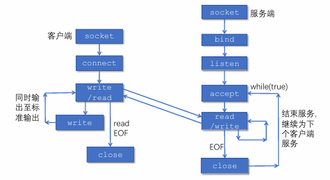
3.传输层复用和分用¶
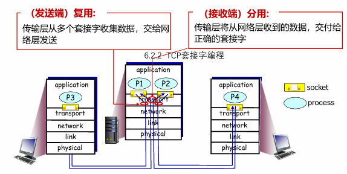
复用是指发送方不同的应用进程都可以使用同一个传输层协议传送数据。分用是指接收方的传输层在剥去报文的首部后能够把这些数据正确交付到目的应用进程。
-
套接字标识与端口号:
- 端口号是套接字标识的一部分：
- 每个套接字在本地关联一个端口号
- 端口号是一个16比特的数
- 端口号的分类：
- 熟知端口：0～1023，由公共域协议使用
- 注册端口：1024～49151，需要向IANA注册才能使用
- 动态和/或私有端口：49152～65535，一般程序使用
- 报文段中有两个字段携带端口号
- 源端口号：与发送进程关联的本地端口号
- 目的端口号：与接收进程关联的本地端口号
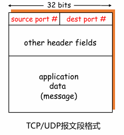
- 端口号是套接字标识的一部分：
-
套接字标识与端口号：
- 服务器端使用的端口号。分为两类，一类是熟知端口号，数值为01023，IANA（互联网地址指派机构）把这些端口号指派给了TCP/IP最重要的一些应用程序，让所有的用户都知道。另一类称为登记端口号，数值为102449151，它是供没有数值端口号的应用程序使用的，使用这类端口号必须在IANA登记，以防止重复。
- 客户端使用的端口号，数值为49152~65535。因为这类端口号仅在客户进程运行时才动态地选择，所以又称短暂端口号。党服务器进程收到客户进程地报文时，就知道了客户进程所使用的端口号，因为可以把数据发送给客户进程。通信结束后，刚用过的客户端口号就不复存在，这个端口号就可以供其他客户进程使用。
-
套接字端口号的分配
- 自动分配：
- 创建套接字时不指定端口号
- 由操作系统从49152～65535中分配
- 客户端通常使用这种方法
- 使用指定端口号创建套接字：
- 创建套接字时指定端口号
- 实现公共域协议的服务器应分配众所周知的端口号（0～1023）
- 服务器通常采用这种方法
- 自动分配：
-
UDP分用的方法：UDP套接字使用
- 接收方传输层收到一个UDP报文段后：
- 检查报文段中的目的端口号，将UDP报文段交付到具有该端口号的套接字
- <目的IP地址，目的端口号> 相同的UDP报文段被交付给同一个套接字，与<源IP地址，源端口号> 无关
- 报文段中的<源IP地址，源端口号> 被接收进程用来发送响应报文
- 接收方传输层收到一个UDP报文段后：
-
TCP服务器使用的套接字：
- 监听套接字：
- 服务器平时在监听套接字上等待客户的连接请求，该套接字具有众所周知的端口号
- 连接套接字：
- 服务器在收到客户的连接请求后，创建一个连接套接字，使用临时分配的端口号
- 服务器同时创建一个新的进程，在该连接套接字上服务该客户
- 每个连接套接字只与一个客户通信，即只接收具有以下四元组的报文段：
- 源IP地址 = 客户IP地址，源端口号 = 客户套接字端口号
- 目的IP地址 = 服务器IP地址，目的端口号 = 服务器监听套接字的端口号
- 连接套接字需要使用<源IP地址，目的IP地址，源端口号，目的端口号>四元组进行标识，服务器使用该四元组将TCP报文段交付到正确的连接套接字。
- 监听套接字：
4.无连接传输：UDP¶
- 网络层提供的服务（best-effort service）：
- 尽最大努力将数据包交付到目的主机
- 不保证投递的可靠性和顺序
- 不保证带宽及延迟要求
- UDP提供的服务：
- 进程到进程之间的报文交付
- 报文完整性检查（可选）：检测并丢弃出错的报文
-
UDP需要实现的功能：
- 复用和分用
- 报文检错
-
UDP报文段结构：
- UDP报文：
- 报头：携带协议处理需要的信息
- 载荷（payload）：携带上层数据
- 用于复用和分用的字段：
- 源端口号
- 目的端口号
- 用于检测报文错误的字段：
- 报文总长度
- 校验和（checksum）
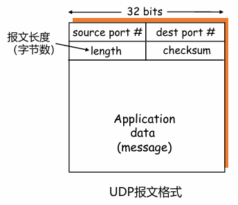
- UDP报文：
-
UDP校验和计算：
- 计算UDP校验和时，要包括伪头、UDP头和数据三个部分
- UDP伪头信息取自IP报头，包括：
- 源IP地址，目的IP地址
- UDP的协议号
- UDP报文段总长度
- UDP校验和的使用是可选的，若不计算校验和，该字段填入0
为什么需要UDP？
- 应用可以尽可能快地发送报文：
- 无建立连接的延迟
- 不限制发送速率（不进行拥塞控制和流量控制）
- 报头开销小
- 协议处理简单
UDP适合哪些应用？
- 容忍丢包但对延迟敏感的应用：如流媒体
- 以单次请求/响应为主的应用：如DNS
- 若应用要求基于UDP进行可靠传输：由应用层实现可靠性
5. 面向连接的传输：TCP¶
5.1 TCP报文段结构¶
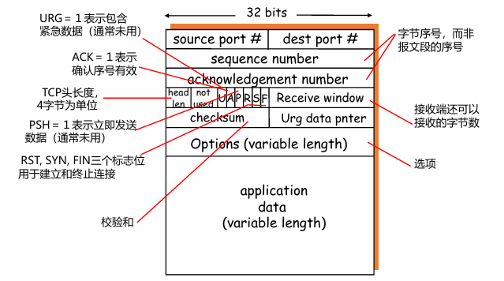
- 重要的TCP选项：
- 最大段长度(MSS):
- TCP段中可以携带的最大数据字节数
- 建立连接时，每个主机可声明自己能够接受的MSS，缺省为536字节
- 窗口比例因子（window scale）：
- 建立连接时，双方可以协商一个窗口比例因子
- 实际接收窗口大小= window size * 2^window scale
- 选择确认（SACK）：
- 最初的TCP协议只使用累积确认
- 改进的TCP协议引入选择确认，允许接收端指出缺失的数据字节
- 最大段长度(MSS):
一个例子🌰
- 主机A向主机B发送仅包含一个字符‘Ｃ’的报文段：
- 发送序号为42
- 确认序号为79（以接收方的角度，对前一次数据的确认）
- 主机B将字符‘Ｃ’回送给主机A：
- 发送序号为79
- 确认序号为43（对收到‘Ｃ’的确认）
- 主机A向主机B发送确认报文段（不包含数据）：
- 确认序号为80（对收到‘Ｃ’的确认）
- 发送序号和确认序号的含义：
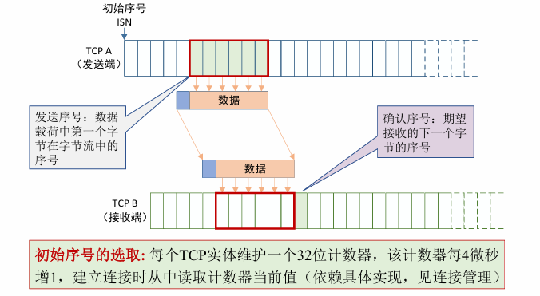
5.2 TCP可靠数据传输¶
- TCP 在不可靠的IP服务上建立可靠的数据传输
- 基本机制：
- 发送端：流水线式发送数据、等待确认、超时重传
- 接收端：进行差错检测，采用累积确认机制
-
乱序段处理：协议没有明确规定
- 接收端不缓存：可以正常工作，处理简单，但效率低
- 接收端缓存：效率高，但处理复杂
-
一个高度简化的TCP协议：仅考虑可靠传输机制，且数据仅在一个方向上传输
- 接收方：
- 确认方式：采用累积确认，仅在正确、按序收到报文段后，更新确认序号；其余情况，重复前一次的确认序号（与GBN类似）
- 失序报文段处理：缓存失序的报文段（与SR类似）
- 发送方：
- 发送策略：流水线式发送报文段
- 定时器的使用：仅对最早未确认的报文段使用一个重传定时器（与GBN类似）
- 重发策略：仅在超时后重发最早未确认的报文段（与SR类似，因为接收端缓存了失序的报文段）
- 接收方：
-
TCP发送方要处理的事件：
- 收到应用数据：
- 创建并发送TCP报文段
- 若当前没有定时器在运行（没有已发送、未确认的报文段），启动定时器
- 超时:
- 重传包含最小序号的、未确认的报文段
- 重启定时器
- 收到ACK：
- 如果确认序号大于基序号（已发送未确认的最小序号）：
- 推进发送窗口（更新基序号）
- 如果发送窗口中还有未确认的报文段，启动定时器，否则终止定时器
- 如果确认序号大于基序号（已发送未确认的最小序号）：
- 收到应用数据：
TCP可能的重传场景
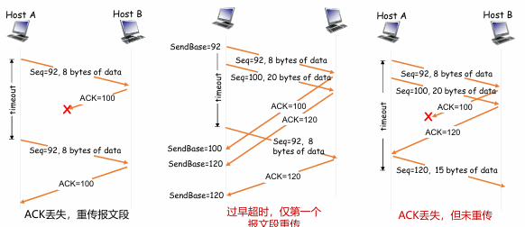
思考题
- 第二种情形，如果TCP像SR一样，每个报文段使用一个定时器，会怎么样？
-
第三种情形，采用流水式发送和累积确认，可以避免重发哪些报文段？
-
TCP通过采用以下机制减少了不必要的重传：
- 只使用一个定时器，避免了超时设置过小时重发大量报文段
- 利用流水式发送和累积确认，可以避免重发某些丢失了ACK的报文段
-
如何设置超时值：
- 为什么设置合理的超时值很重要：
- 若超时值太小，容易产生不必要的重传
- 若超时值太大，则丢包恢复的时间太长
- 直观上，超时值应大于RTT，但RTT是变化的
- 问题转化为如何估计RTT：
- RTT是变化的，需要实时测量从发出某个报文段到收到其确认报文段之间经过的时间（称SampleRTT）
- 由于SampleRTT波动很大，更有意义的是计算其平均值（称EstimatedRTT）
- 平均RTT的估算方法（指数加权移动平均）：
- \(EstimatedRTT = (1- α)*EstimatedRTT + α*SampleRTT\)
- 典型地，α=0.125
- 估算SampleRTT 与 EstimatedRTT的偏差（称DevRTT）：
- \(DevRTT = (1-β)*DevRTT + β*|SampleRTT - EstimatedRTT|\)
- 典型地，β= 0.25
- 设置重传定时器的超时值：\(TimeoutInterval = EstimatedRTT + 4*DevRTT\)
- 为什么设置合理的超时值很重要：
-
TCP确认的二义性：
- TCP确认的二义性问题：
- 重传的TCP报文段使用与原报文段相同的序号
- 发送端收到确认后，无法得知是对哪个报文段进行的确认
- 二义性确认带来的问题：
- 对重传报文段测量的SampleRTT，可能不准确
- 解决方法：
- 忽略有二义性的确认，只对一次发送成功的报文段测量SampleRTT ，并更新EstimtedRTT
- 当TCP重传一个段时，停止测量SampleRT
- TCP确认的二义性问题：
简单忽略重传报文段的问题：重传意味着超时值可能偏小了，需要增大；若简单忽略重传报文段（不更新EstimtedRTT），则超时值也不会更新，超时设置过小的问题没有解决。
-
定时器补偿：采用定时器补偿策略，发送方每重传一个报文段，就直接将超时值增大一倍（不依赖于RTT的更新）；若连续发生超时事件，超时值呈指数增长（至一个设定的上限值）
- Karn算法：结合使用RTT估计值和定时器补偿策略确定超时值
-
TCP的接收端：
- 为减小通信量，TCP允许接收端推迟确认：接收端可以在收到若干个报文段后，发送一个累积确认的报文段
- 推迟确认带来的问题：若延迟太大，会导致不必要的重传；推迟确认造成RTT估计不准确
- TCP协议规定：
- 推迟确认的时间最多为500ms
- 接收方至少每隔一个报文段使用正常方式进行确认
-
TCP接收端的事件和处理：
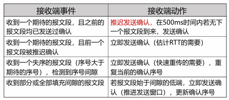
仅靠超时重发丢失的报文段，恢复太慢！
-
快速重传：
- 发送方可利用重复ACK检测报文段丢失：
- 发送方通常连续发送许多报文段
- 若仅有个别报文段丢失，发送方将收到多个重复序号的ACK
- 多数情况下IP按序交付分组，重复ACK极有可能因丢包产生
例如：TCP协议规定：
当发送方收到对同一序号的3次重复确认时，立即重发event:ACK received, with ACK field value of y if (y > SendBase) { //收到更新的确认号 SendBase= y if (there are currently not-yet-acknowledged segments) start timer } else { //收到重复序号的ACK increment count of dup ACKs received for y if (count of dup ACKs received for y = 3) { resend segment with sequence number y //快速重传 } } - 发送方可利用重复ACK检测报文段丢失：
TCP与链路层中GBN/SR的对比分析
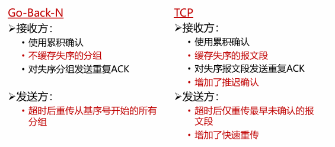
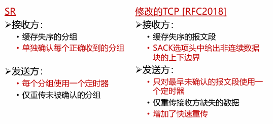
Crash Recovery
如果主机和路由器崩溃，或者连接持续时间较长（比如正下载一个大软件或媒体文件），这些事件的崩溃处理较为困难。
- 为了应对这种情况，我们首先将客户端分为以下两种状态：
- S0：没有未完成的段
- S1：发出一个段，但尚未确认
注意
初看起来似乎很明显：当客户知道服务器崩溃时，当且仅当有一个未确认的段悬挂着时（即处于状态S1） 它才重传该段。然而，进一步探究这种天真的做法便会发现其中的困难。
- 例如，请考虑这样的情形：服务器的传输实体首先发送一个确认，然后在确认被发出以后再执行写操作，把数据传给应用进程。将一个段写到输出流和发送一个确认，这是两件不能同时进行的独立事件。如果在确认被发送出去之后，但是在写操作完成之前服务器崩溃了，那么客户将会接收到确认；当服务器崩溃恢复之后发出的广播消息到来的时候，该客户处于状态S0 因此客户不会重传段，因为它（不正确地）认为段己经到达服务器了。客户的这一决定将导致错失一个段。
此刻你可能会这样想：“这个问题很容易解决，只要重新修改传输实体的程序，让它先执行写操作再发送确认即可。”你可以再试一试。请想象一下，如果写操作已经完成，但是在发送确认之前服务器崩溃了，那么，客户将处于状态S1中，因此它会重传，从而导致在服务器应用进程的数据流中出现一个未被检测出来的重复段。
无论如何编写客户和服务器程序的代码，总是存在使协议无法正确恢复运行的情形。
-
服务器程序可以编成两种方式：
- 先发送确认
- 先写数据
-
客户程序可以编成四种不同方法：
- 总是重传最后一段
- 永远不重传最后一段
- 仅当在状态S0时才重传（可以理解为收到A就重传）
- 仅当在状态S1时才重传（可以理解为没收到A就重传）
服务器和客户两者结合起来有8种操作组合，但是正如我们将会看到的，对于每一种组合都存在一些使协议失败的事件。
排列组合
-
服务器端可能发生 3 种事件：
- 发送一个确认(A)
- 将数据写到输出进程(W)
- 崩溃(C)。
-
这3种事件的发生有6种不同的顺序：AC (W) 、AWC、C(AW)、C(WA)、WAC和WC(A) , 这里的括号表示A或者W不可能发生在C的后面（即一旦崩溃那就彻底崩溃）。
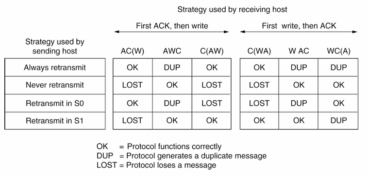
结论
因为客户端没办法知道崩溃动作发生在写操作之前还是之后，所以结论是不可避免的：在事件不同步的基本规则下——即单独的事件一个接着一个发生，而不是同时发生，那么主机的崩溃和恢复就无法做到对上层透明。
- 简单来说，“从第N层崩溃中的恢复工作只能由第N+1层完成。并且仅当高层保留了问题发生前的足够状态信息时才有可能恢复。”
5.3 TCP流量控制¶
流量控制的功能就是让发送方的发送速率不要太快，以便让接收方来得及接收，因此可以说流量控制是一个速度匹配服务（匹配发送方的发送速率与接收方的读取速率）。
-
TCP的接收端：接收缓存
- 接收端TCP将收到的数据放入接收缓存
- 应用进程从接收缓存中读数据
- 进入接收缓存的数据不一定被立即取走、取完
- 如果接收缓存中的数据未及时取走，后续到达的数据可能会因缓存溢出而丢失
-
流量控制：发送端TCP通过调节发送速率，不使接收端缓存溢出
为什么GBN/SR和UDP不需要流量控制
- GBN和SR均假设：
- 正确、按序到达的分组被立即交付给上层
- 其占用的缓冲区被立即释放
- 发送方根据确认序号即可知道：
- 哪些分组已被移出接收窗口
- 接收窗口还可以接受多少分组
-
因此，GBN和SR不需要流量控制
-
UDP不保证交付：当应用进程消费数据不够快时，接收缓存溢出，报文数据丢失，UDP不负责任
-
TCP如何进行流量控制：
- 接收缓存中的可用空间称为接收窗口：RcvWindow = RcvBuffer-[LastByteRcvd - LastByteRead]
- 接收方将RcvWindow放在报头中，向发送方通告接收缓存的可用空间
- 发送方限制未确认的字节数不超过接收窗口的大小，即：LastByteSent-LastByteAcked ≤ RcvWindow
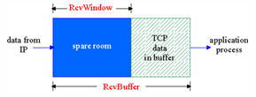
- 特别是，当接收方通告接收窗口为0时，发送方必须停止发送
-
非零窗口通告：
- 发送方/接收方对零窗口的处理：
- 发送方：当接收窗口为0时，发送方必须停止发送
- 接收方：当接收窗口变为非0时，接收方应通告增大的接收窗口
- 当发送方停止发送后，接收方不再收到数据，如何触发接收端发送“非零窗口通告”呢？
- TCP协议规定：
- 发送方收到“零窗口通告”后，可以发送“零窗口探测”报文段
- 从而接收方可以发送包含接收窗口的响应报文段
- 发送方/接收方对零窗口的处理：
-
零窗口探测的实现：
- 发送端收到零窗口通告时，启动一个持续计时器
- 计时器超时后，发送端发送一个零窗口探测报文段（序号为上一个段中最后一个字节的序号）
- 接收端在响应的报文段中通告当前接收窗口的大小
- 若发送端仍收到零窗口通告，重新启动持续计时器
糊涂窗口综合症
- 当数据的发送速度很快、而消费速度很慢时，零窗口探测的简单实现带来以下问题：
- 接收方不断发送微小窗口通告
- 发送方不断发送很小的数据分组
- 大量带宽被浪费
- 解决方案：
- 接收方启发式策略
- 发送方启发式策略
-
接收方启发式策略：
- 通告零窗口之后，仅当窗口大小显著增加之后才发送更新的窗口通告
- 什么是显著增加：窗口大小达到缓存空间的一半或者一个MSS，取两者的较小值
-
发送方启发式策略：
- 使用Nagle算法确定发送时机
- 使用接收窗口限制发送的数据量，已发送未确认的字节数不超过接收窗口的大小
5.4 TCP连接管理¶
- 建立一条TCP连接需要确定两件事：
- 双方都同意建立连接（知晓另一方想建立连接）
- 初始化连接参数（序号，MSS等）
TCP两次握手建立连接¶
两次握手建立连接可行吗
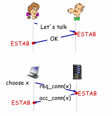
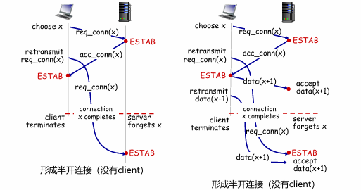
-
第一种情况，服务器回来太慢，client连接请求太慢，重新尝试连接，但这个sender的请求经过了很久才到达，服务器已经不认识这个client了，在client角度，他认为已经连接好了，而服务器角度认为没有client。
-
第二种情况在第一种情况的基础上，在连接结束（红色虚线）后，服务器甚至还收到了data(x+1)。
-
以上两种本质上都是 Delayed Duplicates Problem
-
Solution 1：使用seq来标识
- 依然存在如下的问题：如果第一次seq=4的包收到了，后续的包都丢了，下一次发新的seq=4的包时，服务器还认为它是原来的seq=4的包，就会丢弃它。
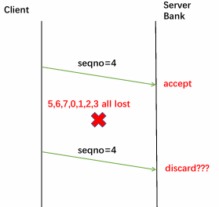
- 依然存在如下的问题：如果第一次seq=4的包收到了，后续的包都丢了，下一次发新的seq=4的包时，服务器还认为它是原来的seq=4的包，就会丢弃它。
-
Solution2：使用seq的同时，再添加time的信息
packet arrival: if (packet.seq see before and time is short (<T)) discard packet if (packet.seq see before and time is large (>T)) accept packet- 工作流程：
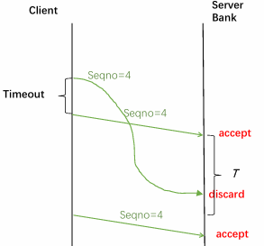
- 工作流程：
-
实现方法：
-
Forbidden region：如果前一个包进入了Forbidden region，后续就会出现duplicate
从更宏观的角度来看：
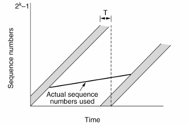
TCP三次握手建立连接¶
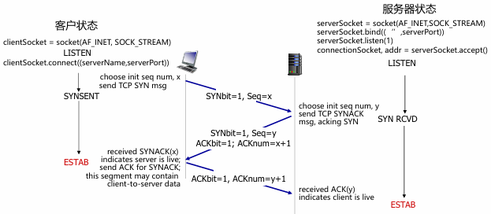
-
流程如下：
- 客户TCP发送SYN 报文段（SYN=1, ACK=0）
- 给出客户选择的起始序号
- 不包含数据
- 服务器TCP发送SYNACK报文段（SYN=ACK=1）（服务器端分配缓存和变量）
- 给出服务器选择的起始序号
- 确认客户的起始序号
- 不包含数据
- 客户发送ACK报文段（SYN=0，ACK=1）（客户端分配缓存和变量）
- 确认服务器的起始序号
- 可能包含数据
- 客户TCP发送SYN 报文段（SYN=1, ACK=0）
-
关闭TCP连接：非对称释放和对称释放
- 不对称释放 Asymmetric：当一部分挂起时，另一部分挂起时，连接中断。会导致一些数据丢失：
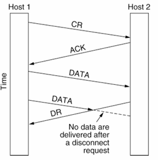 -
对称释放 symmetric：将连接视为两个单独的单向连接和要求，每一个都要单独释放。
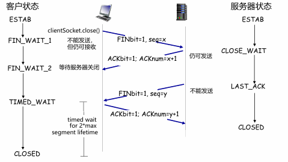- 先关闭从左往右的连接（CLOSE_WAIT状态），然后再发送FIN（LAST_ACK），关闭从右往左的连接。
- 不对称释放 Asymmetric：当一部分挂起时，另一部分挂起时，连接中断。会导致一些数据丢失：
山谷进攻问题！
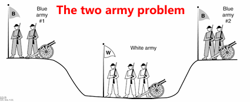
左右两边需要商量一个时间，只有两只队伍同时去打才能打过！
不仅要确保对面知道，还要确保对面一定能知道我方知道！（猜疑链hhh）这样就陷入了死循环，实际上只要双方有延迟，就不可能同时确保以上两者。
把这个问题转换成连接释放的过程，也是同理，因此还是采取上述提到的四次挥手过程。
- 客户/服务器经历的TCP状态序列： 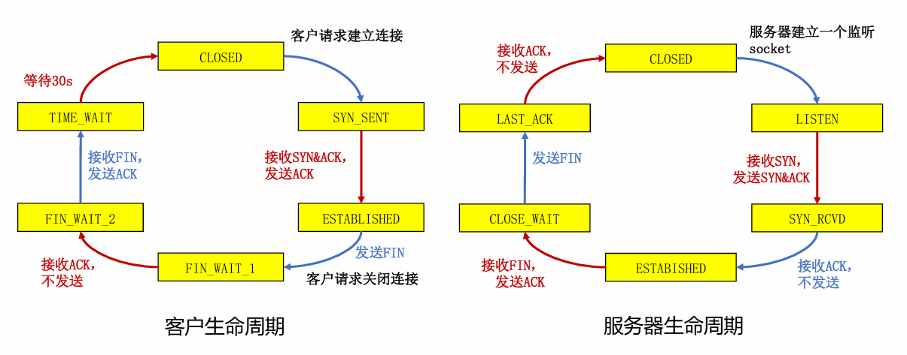
安全问题¶
-
SYN洪泛攻击：服务器收到SYN段后，会发送SYNACK段，会分配资源，超时后还会重发。而发送方发送SYN是低代价的，如果攻击者采用伪造的源IP地址，向服务器发送大量的SYN段，却不发送ACK段，服务器就会崩掉。
-
TCP端口扫描：（攻击的前置）
- 若收到SYNACK段，表明目标端口上有服务在运行
- 若收到RST段，表明目标端口上没有服务在运行
- 若什么也没收到，表明路径上有防火墙，有些防火墙会丢弃来自外网的SYN报文段
6.TCP拥塞控制¶
-
流量控制与拥塞控制的异同：
- 流量控制：限制发送速度，使不超过接收端的处理能力
- 拥塞控制：限制发送速度，使不超过网络的处理能力
-
网络拥塞造成：
- 丢包：由路由器缓存溢出造成
- 分组延迟增大：链路接近满载造成
-
大量网络资源用于：
- 重传丢失的分组
- （不必要地）重传延迟过大的分组
- 转发最终被丢弃的分组
-
发送方采用什么机制限制发送速率? 发送方使用拥塞窗口cwnd限制已发送未确认的数据量: （cwnd随发送方感知的网络拥塞程度而变化）
- LastByteSent-LastByteAcked ≤ cwnd
- rate = cwnd/RTT Bytes/sec
-
拥塞窗口的调节策略：AIMD：
- 乘性减（Multiplicative Decrease）
- 发送方检测到丢包后，将cwnd的大小减半（但不能小于一个MSS（最大报文段大小））
- 目的：迅速减小发送速率，缓解拥塞
- 加性增（Additive Increase）
- 若无丢包，每经过一个RTT，将cwnd增大一个MSS，直到检测到丢包
- 目的：缓慢增大发送速率，避免振荡
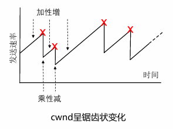
- 乘性减（Multiplicative Decrease）
-
TCP慢启动：
- 采用“加性增”增大发送窗口，太慢！
- 在新建连接上，令cwnd= 1 MSS，起始速度= MSS/RTT
- 然而，网络中的可用带宽可能远大于MSS/RTT
- 慢启动的基本思想：
- 在新建连接上指数增大cwnd，直至检测到丢包（此时终止慢启动）
- 希望迅速增大cwnd至可用的发送速度
- 慢启动的实施：
- 每收到一个ACK段，cwnd增加一个MSS
- 只要发送窗口允许，发送端可以立即发送下一个报文段
- 特点：以一个很低的速率开始，按指数增大发送速率
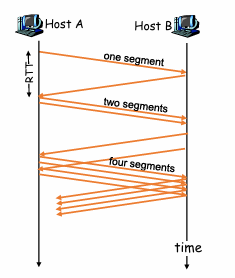
- 采用“加性增”增大发送窗口，太慢！
-
发送方维护变量ssthresh：
- 发生丢包时，ssthresh=cwnd/2
- ssthresh是从慢启动转为拥塞避免的分水岭：
- cwnd低于门限时，执行慢启动
- cwnd高于门限：执行拥塞避免
-
拥塞避免阶段，拥塞窗口线性增长：
-
每当收到ACK，cwnd=cwnd + MSS*(MSS/cwnd)
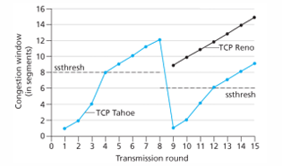 -
超时：cwnd回到1
- 检测到3个重复的ACK后：(如果是reno，回到ssthresh附近)
- TCP Reno实现：cwnd= ssthresh+3，线性增长
- TCP Tahoe实现：cwnd=1 MSS，慢启动
-
-
TCP发送端的事件与动作：
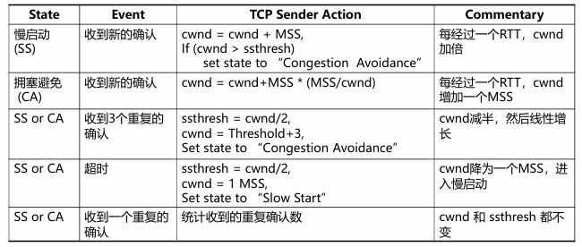
Wireless Issues
Wireless正常传输时丢包概率就很大，如果继续采用之前的方式，会导致ssthresh很低。
- The solution is that the two mechanisms act at different timescales：传输层和链路层的重传时间单位不同（比如TCP 1s重传一次，而链路层1ms重传1次）：在TCP反应过来之前，底下的链路层已经完成重传
-
TCP的公平性：
- 公平性目标: 如果K条TCP连接共享某条带宽为R的瓶颈链路，每条连接应具有平均速度R/K
-
为什么TCP是公平的：
- 考虑两条竞争的连接（各种参数相同）共享带宽为R的链路：斜率为-1的线是充分利用的线，斜率为1的线是充分公平的线
- 加性增：连接1和连接2按照相同的速率增大各自的拥塞窗口，得到斜率为1的直线
- 乘性减：连接1和连接2将各自的拥塞窗口减半
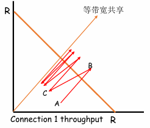
- A->B，A的利用不充分，通过加性增，沿着斜率为1的线进行增长，到B后发生了丢包。
- B->C，乘性减，会往原点方向减少。
- 不断迭代后，会不断趋向两条线相交的地方（也就是充分公平充分利用）
- 考虑两条竞争的连接（各种参数相同）共享带宽为R的链路：斜率为-1的线是充分利用的线，斜率为1的线是充分公平的线
-
TCP公平性更复杂的情形
- 若相互竞争的TCP连接具有不同的参数（RTT、MSS等），不能保证公平性
- 若应用（如web）可以建立多条并行TCP连接，不能保证带宽在应用之间公平分配，比如：
- 一条速率为R的链路上有9条连接
- 若新应用建立一条TCP连接，获得速率R/10
- 若新应用建立11条TCP，可以获得速率R/2
7.拥塞控制的发展（细节不太重要）¶
7.1 TCP CUBIC¶
-
BIC算法对满载窗口进行二分查找：
- 如发生丢包时窗口大小是W1，为保持满载而不丢包，满载窗口应小于W1
- 如检测到丢包并将窗口乘性减小为W2 ，则满载窗口应大于W2
-
二分查找: 在ACK时钟的驱动下，将拥塞窗口置为(W1 +W2)/2(新的W2值)，不断逼近满载窗口
- 最大探查: 如窗口再次达到W1而没有丢包，说明满载窗口大于W1 ，则以逼近W1的镜像过程增大拥塞窗口
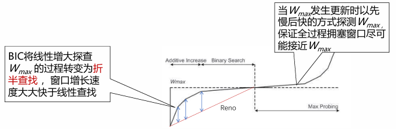
-
BIC存在带宽不公平性问题： BIC以ACK时钟驱动拥塞窗口的更新，RTT较短的连接会更快到达满载窗口，占据更多的带宽，产生不公平性问题（RTT-fairness）
-
CUBIC将BIC算法连续化，用三次函数拟合BIC算法曲线
- 拥塞窗口成为距上次丢包的时间 t 的函数，t取值位于两次丢包之间，不再根据RTT间隔来确定调整窗口的时机，避免了RTT不公平问题
-
三次函数增长分为两个阶段：
- Steady State Behavior阶段：以凹函数增长逼近最近一次丢包时窗口；
- Max probing阶段：以凸函数增长探测当前满载窗口
7.2 Google BBR¶
-
拥塞与瓶颈链路带宽：
- 瓶颈链路带宽BtlBw，决定了端到端路径上的最大数据投递速率
- 拥塞窗口大于BtlBw时，瓶颈链路处会形成排队，导致RTT延长(直至超时)
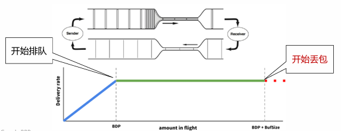
-
瓶颈链路带宽BtlBw：不会引起路由器缓存排队的最大发送速率
- RTprop：往返时间
- BDP=BtlBw x RTprop
Max BW和min RTT不能同时被测得
- 要测量最大带宽，就要把瓶颈链路填满，此时buffer中存在排队分组，延迟较高
- 要测量最低延迟，就要保证链路队列为空，网络中分组越少越好，cwnd较小
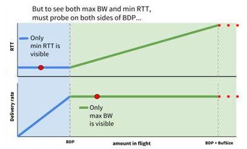
图解 原文
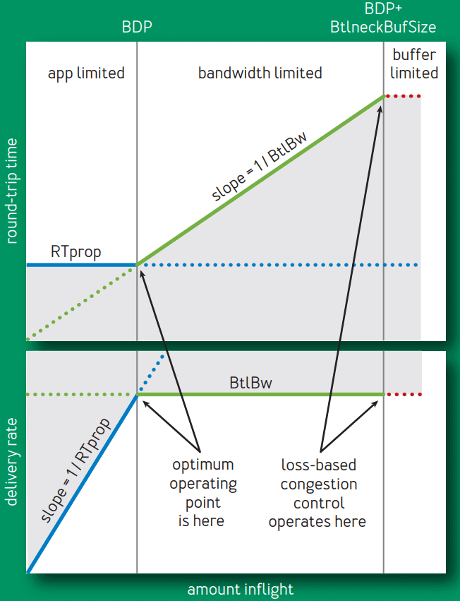
该图展示了inflight 数据量（已发送但还未被确认的数据量）不断增大时， RTT 和传输速率（delivery rate）的变化情况：
-
蓝线展示 RTprop 限制，
-
绿线展示 BtlBw 限制，
-
红线是瓶颈缓冲区（bottleneck buffer）
-
横轴表示 inflight 数据量，关键的点有三个，依次为 0 -> BDP -> BDP+BtlneckBuffSize， 后两个点做垂线，将整个空间分为了三个部分：
- (0, BDP)：这个区间内，应用（客户端）发送的数据并未占满瓶颈带宽（容量），因此称为应用受限（app limited）区域；
- (BDP, BDP+BtlneckBuffSize)：这个区间内，已经达到链路瓶颈容量，但还未超过瓶颈容量+缓冲区容量，此时应用能发送的数据量主要受带宽限制， 因此称为带宽受限（bandwidth limited）区域；
- (BDP+BtlneckBuffSize, infinity)：这个区间内，实际发送速率已经超过瓶颈容量+缓冲区容量 ，多出来的数据会被丢弃，缓冲区大小决定了丢包多少，因此称为缓冲区受限（buffer limited）区域。
进一步解释
- inflight 数据量在 0 -> BDP 区间内时，发送的数据还未达到瓶颈容量，因此，这个阶段的行为由 RTprop 决定。
- 往返时间不变：对应上半部分图，因为此时还未达到瓶颈带宽，链路不会随数据量增加而带来额外延迟；
- 传输速率线性增大：对应下半部分图；
- inflight 数据量刚好等于 BDP 时
- 两条限制线相交的点称为 BDP 点，这也是 BDP（bandwidth-delay product，带宽-延迟乘积）这个名称的由来；
- 此时可以算出：inflight = BtlBw × RTprop；
- inflight 大于 BDP 之后，管道就满了（超过瓶颈带宽）
- 超过瓶颈带宽的数据就会形成一个队列（queue），堆积在链路瓶颈处，然后
- RTT 将随着 inflight 数据的增加而线性增加，如上半部分图所示。
- inflight 继续增大，超过 BDP+BtlneckBuffSize 之后，即超过链路瓶颈所支持的最大缓冲区之后，就开始丢包。
灰色区域是不可达的，因为它违反了至少其中一个限制。限制条件的不同导致了三个可行区域 （app-limited, bandwidth-limited, and buffer-limited）各自有不同的行为。
尝试使用以下方法进行测量
-
BDP检测：启动阶段（START_UP）
- 当连接建立时，类似TCP的慢启动，指数增加发送速率，尽可能快地占满管道
- 若经过三次发现投递率不再增长，说明已达到BtlBw，瓶颈链路处分组已开始排队（事实上此时占的是三倍BDP）
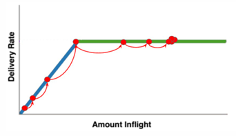
-
BDP检测：排空阶段（DRAIN）
- 指数降低发送速率（相当于是startup的逆过程），将多占的两倍buffer慢慢排空
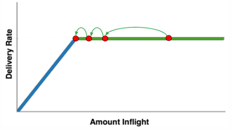
-
BDP检测：瓶颈带宽探测（PROBE_BW）
- 进入稳定状态后,先在一个RTT内增加发送速率，探测最大带宽
- 如果RTT没有变化，再减小发送速率，排空前一个RTT多发出来的包
- 后面6个周期使用更新后的估计带宽发送
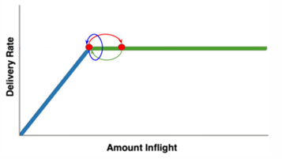
-
BBR状态机： 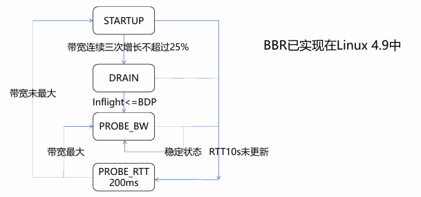
7.3 Data Center TC¶
-
数据中心的性能问题：
- Incast
- Queue Buildup
- Buffer Pressure
-
DCTCP核心思想：
- 根据网络拥塞程度精细地减小发送窗口：一旦发现拥塞，发送窗口减至原窗口的（1-α/2），α 反映了拥塞程度，而TCP中α总为1
- 根据交换机队列的瞬时长度标记ECN（explicit congestion notification）
7.4 DCCP¶
DCCP = UDP + 拥塞控制
8.传输层协议的发展¶
8.1 MPTCP¶
多路径TCP协议可将单一数据流切分为若干子流，同时利用多条路径进行传输。
在多路径传输中，发送端将属于同一个数据流的数据包调度到不同的路径上传输，由于不同路径的差异，这些数据包往往无法按照发送顺序到达接收。乱序到达的数据包需暂存在接收缓存中，直到接收缓中的数据包能够按序交付给上层应用，这既影响了数据传输的实时性，又影响了网络的吞吐量。
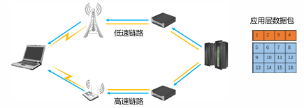
8.2 QUIC¶
-
TCP多流复用存在队头阻塞问题 >例如：网页传输中，每个单独的图片即为一个数据流，不同数据流之间相互独立。为每个数据建立一个TCP连接很低效（尤其对于小流，单独建立连接成本高昂），因此出现了多流复用
-
QUIC在网络体系结构中的位置：
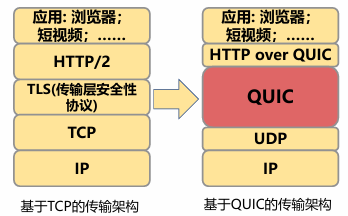